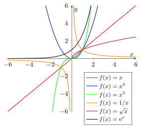

Continuity¶
Definition¶
Let and We say that is continuous at if for every there exists such that, for every
The function is continuous on if it is continuous at every point of
Interpretation¶
Continuity expresses the idea that small changes in the input of a function lead to small changes in its output.
A continuous function does not exhibit sudden jumps or breaks at the point under consideration.
Key Results¶
- If is a limit point of continuity at is equivalent to endpoints use the corresponding one-sided limit.
- Sums, differences, products, quotients (where defined), maxima and minima of continuous functions are continuous.
- If and is continuous at then so a continuous function may be interchanged with a limit.
- Standard facts used from here onwards. Each of the following is continuous at every point of its domain: polynomials, and rational functions wherever the denominator is nonzero; the power functions on and on its natural domain; the exponential functions and the logarithms for the trigonometric functions and on and wherever and the absolute value
Examples¶
- The function is continuous on
- The function is not continuous at but itself is a continuous function since it is continuous everywhere in its domain.

Prerequisites¶
Related Concepts¶
- Uniform Continuity
- Singularity
- Derivative and Differentiability
- Intermediate Value Theorem
- Extreme Value Theorem
- Mean Value Theorem
- Rolle’s Theorem
- Fundamental Theorem of Calculus Part 1
- Dirichlet Function
- Limit at a Point
Sources¶
- Math I: Calculus · Lecture 5
Aliases: continuous function
Last updated: 30 August 2026 02:54